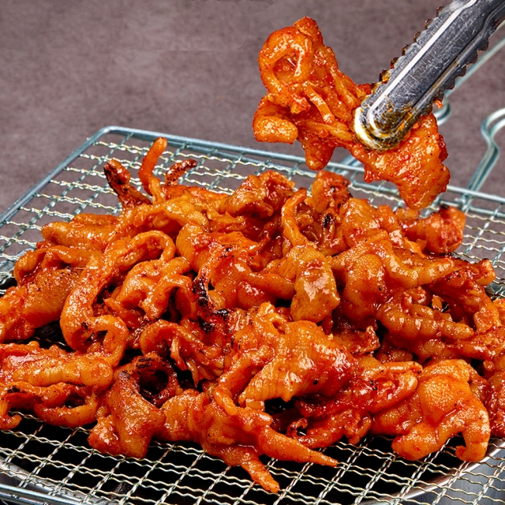

좋아하는 음식?
좋아하는 색깔?
좋아하는 게임?


좋아하는 음식? |
좋아하는 색깔? |
좋아하는 게임? |
 |
|
|
이유는? |
이유는? |
이유는? |
무뼈 닭발에 매콤함과 닭발 특유의 쫀득하고 젤리 같은 식감이 좋고 밥이랑 먹거나 닭발만 먹을 때도 물리지 않고 많이 먹을 수 있어서 이다 |
푸른색 계열은 시원한 느낌을 주고 어디에 칠해도 조화롭게 어울리는 것 같아서이다. |
총을 쏘거나 다른 사람들과 같이 게임하는 것이 재밌고 FPS 서바이벌 종류 게임을 하면 긴장감과 이겼을 때 느끼는 기분이 좋아서이다. |